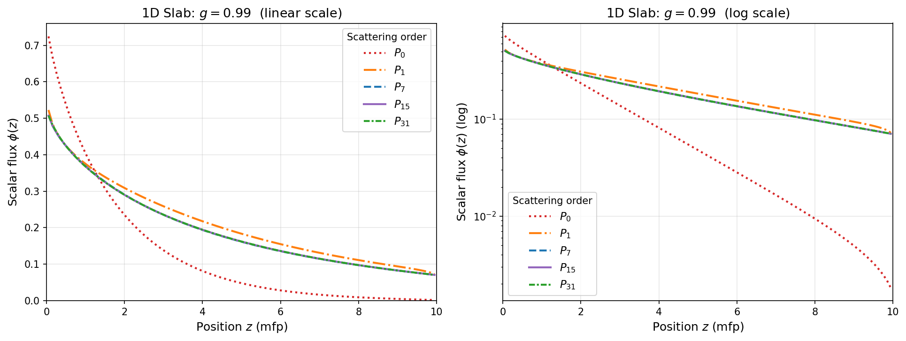

3.7. Very Strong Forward-Peaked Scattering
In this tutorial, we will discuss the challenges associated with highly forward-peaked cross sections. For this exercise, a Henyey-Greenstein (HG) cross section expansion will be assumed.
- :nbsphinx-math:`begin{equation}
f(mu) = frac{1 - g^2}{2(1 + g^2 - 2gmu)^{3/2}}
end{equation}`
We choose the HG function for this due to its simple expansion in terms of the Legendre polynomials \(P_n\):
so the Legendre moments are simply \(f_\ell = g^\ell\). This closed-form result means that the convergence rate of the Legendre expansion is entirely determined by how quickly \(g^\ell\) decays, which is why large \(g\) creates a severe truncation problem.
For \(g = 0.99\), the scattering cross-sections converge increadibly slowly: the Legendre moments decay as \(0.99^\ell\), and even the 31st moment retains \(0.99^{31} \approx 0.73\) — meaning the scattering information is still substantial at \(\ell = 31\).
This tutorial quantifies the convergence problem analytically and solves a 1D slab transport problem to demonstrate the practical consequence: all \(P_L\) solutions with \(L \leq 31\) are substantially wrong.
To run the code: jupyter nbconvert --to python --execute forward_peaked_g099.ipynb.
To convert to a Python script: jupyter nbconvert --to python forward_peaked_g099.ipynb
[ ]:
import os
import sys
import glob
import numpy as np
import matplotlib
matplotlib.use('Agg')
import matplotlib.pyplot as plt
from mpi4py import MPI
sys.path.append("../../../..")
from pyopensn.mesh import OrthogonalMeshGenerator
from pyopensn.xs import MultiGroupXS
from pyopensn.aquad import GLProductQuadrature1DSlab
from pyopensn.solver import DiscreteOrdinatesProblem, SteadyStateSourceSolver
from pyopensn.fieldfunc import FieldFunctionInterpolationLine
from pyopensn.math import Vector3
from pyopensn.context import UseColor, Finalize
UseColor(False)
rank = MPI.COMM_WORLD.rank
3.7.1. The Henyey-Greenstein Kernel: g = 0.9 vs. g = 0.99
The Legendre moments of the HG kernel are \(f_\ell = g^\ell\). For large \(g\) the moments decay slowly, requiring many terms to accurately represent the scattering kernel.
The table below contrasts the two asymmetry factors:
Moment \(\ell\) |
\(g = 0.9\) (\(0.9^\ell\)) |
\(g = 0.99\) (\(0.99^\ell\)) |
|---|---|---|
1 |
0.900 |
0.990 |
5 |
0.590 |
0.951 |
15 |
0.206 |
0.860 |
31 |
0.033 |
0.730 |
44 |
0.009 |
0.643 |
100 |
\(\approx 0\) |
0.366 |
For \(g = 0.99\), even the 31st moment is still \(\approx 73\%\) of the zeroth moment. By contrast, for \(g = 0.9\) it is only \(\approx 3\%\). This stark difference makes \(g = 0.99\) vastly harder to handle with a truncated \(P_N\) expansion.
3.7.2. How Many Legendre Moments Are Needed?
After truncating at order \(L\), the next scattering moment is \(g^{L+1}\). For this to fall below \(\varepsilon\) we need:
\(g\) |
\(L\) for 1% accuracy |
\(L\) for 0.1% accuracy |
|---|---|---|
0.5 |
\(\approx 6\) |
\(\approx 9\) |
0.9 |
\(\approx 44\) |
\(\approx 66\) |
0.99 |
\(\approx 458\) |
\(\approx 687\) |
For \(g = 0.99\), achieving 1% accuracy requires \(L \approx 458\) moments. Since each additional moment increases computational cost, this makes brute-force \(P_N\) completely impractical for very strongly forward-peaked media.
3.7.3. Legendre Expansion Truncation for g = 0.99
The \(P_L\) expansion of the HG kernel is:
For \(g = 0.99\), even truncating at \(L = 31\) leaves \(g^{32} = 0.99^{32} \approx 0.725\) of the scattering unrepresented — nearly three-quarters of the kernel is missing. The truncated expansion suffers severe oscillations near \(\mu_0 = 1\) that produce large unphysical negative values in the reconstructed scattering kernel.
These negative values are problematic because a physical scattering kernel must be non-negative everywhere: \(f(\mu_0) \geq 0\). When the truncated expansion goes negative, it effectively removes particles from certain angular bins during the within-group scattering source computation, which can cause spurious dips or even negative fluxes in the transport solution. The deeper the truncation (lower \(L\)), the more severe and widespread these oscillations become.
3.7.4. 1D Transport Problem: Scattering Order Convergence
We solve a one-group 1D slab transport problem with \(g = 0.99\) to show how poorly the \(P_L\) approximation converges.
Problem setup:
Parameter |
Value |
|---|---|
Geometry |
1D slab, \(z \in [0, 10]\) mfp |
\(\sigma_t\) |
1.0 |
\(\sigma_s\) |
0.9 |
Scattering kernel |
HG, \(g = 0.99\) |
Source |
Isotropic flux at \(z = 0\) |
Right boundary |
Vacuum |
Transport cross section: \(\sigma_{tr} = \sigma_t - g\,\sigma_s = 1.0 - 0.891 = 0.109\), giving a transport mean free path \(\lambda_{tr} = 1/0.109 \approx 9.17\) mfp. The 10 mfp slab is only \(\approx 1.09\,\lambda_{tr}\) thick — optically very thin from a transport perspective.
Remaining moments at each \(L\) used in the study:
\(L\) |
\(g^{L+1}\) |
Fraction still missing |
|---|---|---|
0 |
0.990 |
99.0% |
1 |
0.980 |
98.0% |
7 |
0.923 |
92.3% |
15 |
0.851 |
85.1% |
31 |
0.725 |
72.5% |
[ ]:
sigma_t = 1.0
sigma_s = 0.9
g_hg = 0.99
L_max = 31
L_slab = 10.0
N_cells = 100
sigma_tr = sigma_t - g_hg * sigma_s
lambda_tr = 1.0 / sigma_tr
print(f"sigma_tr = {sigma_tr:.4f}")
print(f"lambda_tr = {lambda_tr:.4f} mfp")
print(f"Slab in transport mfp: {L_slab / lambda_tr:.4f}")
xs_filename = "forward_peaked_hg099.xs"
with open(xs_filename, "w") as f:
f.write("NUM_GROUPS 1\n")
f.write(f"NUM_MOMENTS {L_max + 1}\n\n")
f.write("SIGMA_T_BEGIN\n")
f.write(f"0 {sigma_t}\n")
f.write("SIGMA_T_END\n\n")
f.write("TRANSFER_MOMENTS_BEGIN\n")
for ell in range(L_max + 1):
f.write(f"M_GFROM_GTO_VAL {ell} 0 0 {sigma_s * g_hg**ell:.10f}\n")
f.write("TRANSFER_MOMENTS_END\n")
print(f"\nCross-section file written: {xs_filename}")
for ell in [0, 1, 3, 7, 15, 31]:
print(f" sigma_s,{ell:<2d} = {sigma_s * g_hg**ell:.6f}")
dx = L_slab / N_cells
nodes = [i * dx for i in range(N_cells + 1)]
meshgen = OrthogonalMeshGenerator(node_sets=[nodes])
grid = meshgen.Execute()
grid.SetUniformBlockID(0)
print(f"\nMesh: {N_cells} cells, length = {L_slab} mfp")
3.7.5. Convergence Study
We solve for \(L = 0, 1, 7, 15, 31\), spanning a wide range of truncation levels:
:math:`P_0` (isotropic): all scattering is treated as perfectly isotropic — maximally wrong for \(g = 0.99\).
:math:`P_1`: the classic diffusion-theory scattering order; adequate only for nearly isotropic media.
:math:`P_7` and :math:`P_{15}`: intermediate orders that capture some directional preference but remain far from convergence.
:math:`P_{31}`: the highest order permitted by the cross-section file written above (which stores moments \(\ell = 0, \ldots, 31\)); still missing \(\approx 72.5\%\) of the scattering kernel.
If the \(P_L\) expansion were the only source of error we would expect the solutions to diverge wildly from each other. The interesting finding — explained in the Discussion section — is that the scalar flux profiles are far less sensitive to scattering order than the kernel convergence analysis would suggest.
[ ]:
scattering_orders = [0, 1, 7, 15, 31]
flux_results = {}
for L in scattering_orders:
print(f"\n=== Solving with P{L} scattering (scattering_order = {L}) ===")
pquad = GLProductQuadrature1DSlab(n_polar=32, scattering_order=L)
xs_mat = MultiGroupXS()
xs_mat.LoadFromOpenSn(xs_filename)
phys = DiscreteOrdinatesProblem(
mesh=grid,
num_groups=1,
groupsets=[{
"groups_from_to": (0, 0),
"angular_quadrature": pquad,
"angle_aggregation_num_subsets": 1,
"inner_linear_method": "petsc_gmres",
"l_abs_tol": 1.0e-8,
"l_max_its": 300,
"gmres_restart_interval": 30,
}],
xs_map=[{"block_ids": [0], "xs": xs_mat}],
boundary_conditions=[
{"name": "zmin", "type": "isotropic", "group_strength": [1.0]},
],
)
ss_solver = SteadyStateSourceSolver(problem=phys)
ss_solver.Initialize()
ss_solver.Execute()
fflist = phys.GetScalarFluxFieldFunction(only_scalar_flux=False)
cline = FieldFunctionInterpolationLine()
cline.SetInitialPoint(Vector3(0.0, 0.0, 0.05))
cline.SetFinalPoint(Vector3(0.0, 0.0, L_slab - 0.05))
cline.SetNumberOfPoints(100)
cline.AddFieldFunction(fflist[0][0])
cline.Execute()
csv_base = f"flux_g099_P{L}"
cline.ExportToCSV(csv_base)
if rank == 0:
csv_files = glob.glob(f"{csv_base}_*.csv")
if csv_files:
data = np.genfromtxt(csv_files[0], delimiter=',', skip_header=1)
idx = np.argsort(data[:, 2])
flux_results[L] = (data[idx, 2], data[idx, 3])
print(f" Max flux = {data[:, 3].max():.5f}")
else:
print(f" WARNING: CSV not found for P{L}")
print(f"\nnumber of scattering orders tested = {len(scattering_orders)}")
[ ]:
if rank == 0 and flux_results:
labels_m = {0: '$P_0$', 1: '$P_1$', 7: '$P_7$', 15: '$P_{15}$', 31: '$P_{31}$'}
colors_m = {0: 'tab:red', 1: 'tab:orange', 7: 'tab:blue', 15: 'tab:purple', 31: 'tab:green'}
ls_m = {0: ':', 1: '-.', 7: '--', 15: '-', 31: (0, (3, 1, 1, 1))}
os.makedirs("images", exist_ok=True)
fig, axes = plt.subplots(1, 2, figsize=(13, 5))
for ax, use_log in zip(axes, [False, True]):
for L in scattering_orders:
if L not in flux_results:
continue
z, phi = flux_results[L]
if use_log:
ax.semilogy(z, np.where(phi > 0, phi, np.nan),
color=colors_m[L], linestyle=ls_m[L], linewidth=2, label=labels_m[L])
else:
ax.plot(z, phi, color=colors_m[L], linestyle=ls_m[L], linewidth=2, label=labels_m[L])
ax.set_xlabel('Position $z$ (mfp)', fontsize=12)
ax.set_xlim(0, L_slab)
ax.legend(title='Scattering order', fontsize=11)
ax.grid(True, alpha=0.3)
axes[0].set_ylabel(r'Scalar flux $\phi(z)$', fontsize=12)
axes[0].set_title(f'1D Slab: $g = {g_hg}$ (linear scale)', fontsize=13)
axes[0].set_ylim(bottom=0)
axes[1].set_ylabel(r'Scalar flux $\phi(z)$ (log)', fontsize=12)
axes[1].set_title(f'1D Slab: $g = {g_hg}$ (log scale)', fontsize=13)
plt.tight_layout()
plt.savefig("images/forward_peaked_flux_g099.png", dpi=150, bbox_inches='tight')
plt.close()
3.7.6. Results
The figure below shows the scalar flux \(\phi(z)\) on linear (left) and log (right) scales for each scattering order.

Key observations:
All :math:`P_L` curves track each other closely despite the enormous differences in scattering kernel accuracy. Even \(P_0\) and \(P_{31}\) predict very similar flux profiles in the linear plot.
The flux decays roughly exponentially, consistent with the transport mean free path \(\lambda_{tr} \approx 9.17\) mfp dominating the attenuation.
Lower-order solutions tend to slightly overestimate the flux deep in the slab because the isotropic or weakly anisotropic scattering approximation re-emits more particles in the backward hemisphere, effectively softening absorption and boosting the surviving flux.
These observations motivate the deeper discussion in the next section.
[ ]:
if rank == 0:
if os.path.exists(xs_filename):
os.remove(xs_filename)
for L in scattering_orders:
for f in glob.glob(f"flux_g099_P{L}_*.csv"):
os.remove(f)
3.7.7. Discussion
3.7.7.1. Kernel Convergence vs. Solution Convergence
The central insight from this tutorial is that convergence of the scattering kernel and convergence of the transport solution are two distinct requirements.
The analytical results show that accurately representing the HG kernel with \(g = 0.99\) requires \(L \approx 458\) Legendre moments for 1% accuracy. However, the scalar flux profiles look essentially converged at much lower orders. This is not a contradiction — it reflects a fundamental property of the \(P_N\) method:
What matters is not whether the scattering kernel is converged, but whether the angular flux solution itself can be well represented by a finite number of spherical harmonics OR if the scattering kernel is converged
For this problem, the angular flux is heavily concentrated in the forward direction (\(\mu \approx +1\)) because:
The source at \(z = 0\) emits isotropically, but forward-going particles dominate after the first mean free path.
With \(g = 0.99\), scattering barely redirects particles — they continue nearly straight ahead after each collision.
The transport mean free path \(\lambda_{tr} \approx 9.17\) mfp means the slab is only \(\approx 1.09\,\lambda_{tr}\) thick, so most particles stream through with few effective direction changes.
As a result, the angular flux is already a smooth, nearly-isotropic-in-the-forward-hemisphere function that low-order \(P_L\) expansions can represent adequately. The scalar flux \(\phi(z) = \int \psi \, d\Omega\) integrates away angular detail further, making it even less sensitive to high-order moments.
3.7.7.2. When Does Scattering Order Actually Matter?
The scattering order has a stronger effect on accuracy when:
The angular flux itself requires many harmonics, e.g., when collimated sources, strongly absorbing media, or reflective boundaries create sharp angular gradients.
Higher angular moments are the quantity of interest, e.g., the net current \(J(z)\).
Multi-dimensional geometry allows scattered particles to reach detectors via side-scattering paths that are suppressed in 1D.
3.7.7.3. Practical Implication
The \(P_L\) approximation is only as demanding as the problem’s angular flux requires — not as demanding as the kernel itself requires. For many practical forward-peaked transport problems, a modest scattering order gives adequate scalar flux accuracy even when the kernel is far from converged. However, when accurate angular flux or current distributions are needed, or for problems with strong absorbers and sharply anisotropic angular flux, higher orders become necessary.
3.7.8. Finalize (for Jupyter Notebook only)
In Python script mode, PyOpenSn automatically handles environment termination. However, this automatic finalization does not occur when running in a Jupyter notebook, so explicit finalization of the environment at the end of the notebook is required. Do not call the finalization in Python script mode, or in console mode.
Note that PyOpenSn’s finalization must be called before MPI’s finalization.
[ ]:
from IPython import get_ipython
def finalize_env():
Finalize()
MPI.Finalize()
ipython_instance = get_ipython()
if ipython_instance is not None:
ipython_instance.events.register("post_execute", finalize_env)